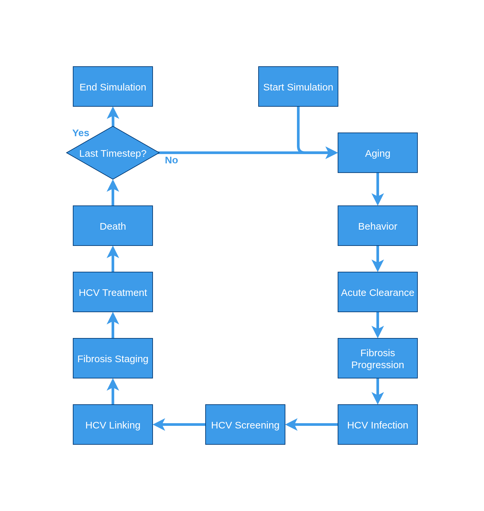
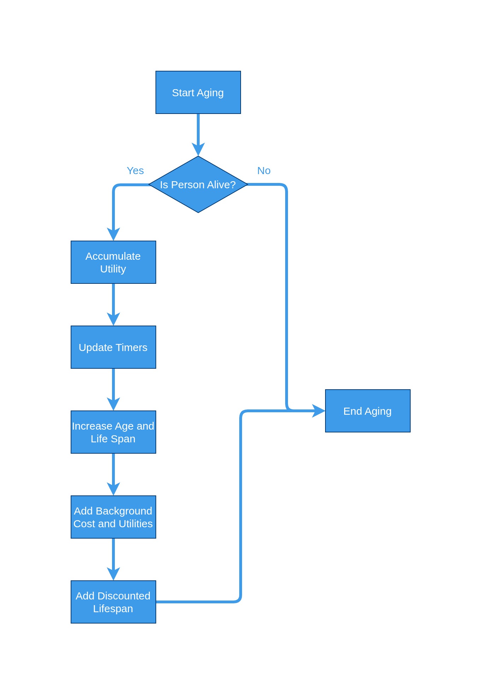
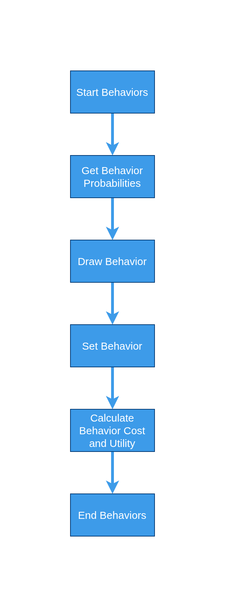
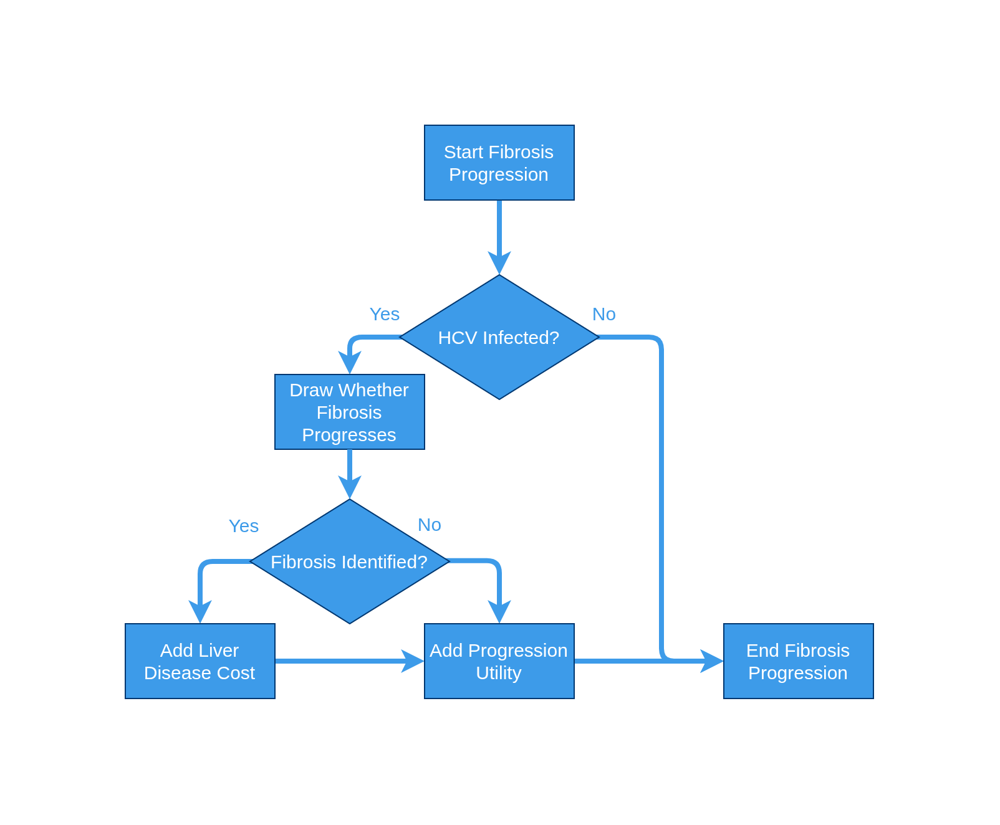
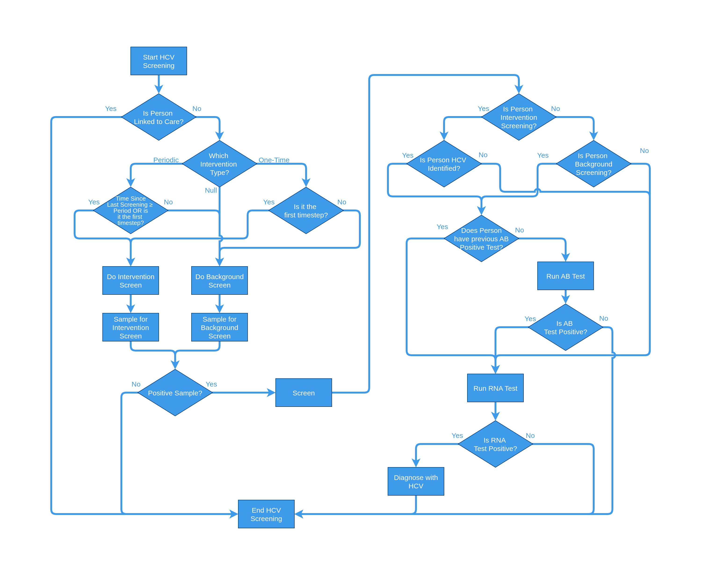
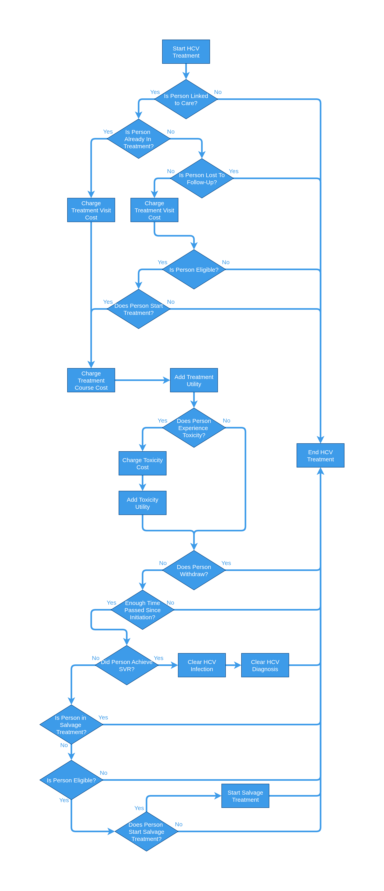
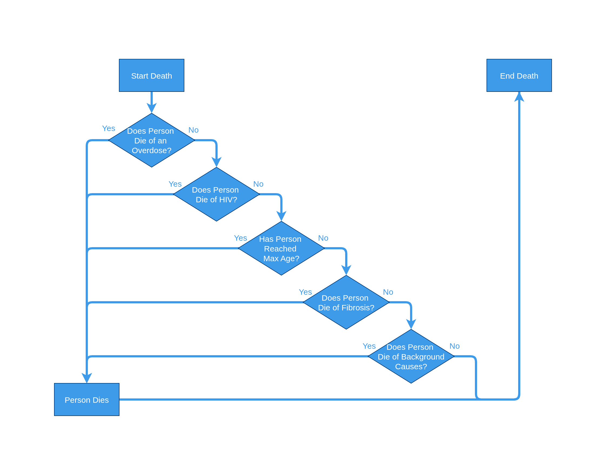

|
HEP-CE 2.0.1
Hepatitis-C Cost Effectiveness Simulation
|
|
HEP-CE 2.0.1
Hepatitis-C Cost Effectiveness Simulation
|
The core function of the redesign for HEPCE focused on making the model contain discrete events. Given the nature of discrete events, this means that each event is able to stand on it's own and be added or removed from the simulation without impacting the model's ability to operate on a person. There are two (and only 2) exceptions to the discrete events: 1. Aging and 2. Death. They must be the capstones of the model so that they can ensure the model does not continue running forever. If these are the only events in the model then the model will simulate the lives of a population cohort with the standard US mortality rates with no specific health conditions. The traditional model flow is a cyclical pattern with each event specified in the sim.conf occurring in sequence.

Aging is perhaps the most straightforward event in the entire set. It simply checks if the person is alive then attempts to update all timers associated with a person in the simulation. This is why it must occur at the beginning of all simulations, it is responsible for the idea of time.

Behavior Changes is the event that governs a person's drug use behaviors. These are being modeled as a set of discrete states in which a person could exist in:
People are free to transition back and forth between them over each timestep, but once "Never" is left, it cannot be returned to.

Clearance focuses on the ability of a person to acutely clear their hepatitis-C infection. This is a phenomena seen in the study of hepatitis and generally estimated to be a 25% clearance rate over 6 months. Because we don't want to attribute accute clearances to treatment, we do not allow users in treatment to clear their HCV infection. This naturally results in an overcount of treatment clearances and an undercount in acute clearances, but the impacts are believed to be negligible.

Fibrosis progression focuses on the movement a person experiences through the various phases of liver fibrosis.

HCV infection focuses on the chances of being infected by the hepatitis-C virus (HCV). As this is not a transmission model, all infection is on a per-person basis. Additionally, acute HCV infections last for a total of six months before progressing to chronic infection. A key addition to this event is that anybody infected is immediately staged with a fibrosis level of F0 (if no previous fibrosis staging has occurred).

HCV screening focuses on the discovery of the hepatitis-C virus. There are two branches in which someone can be screened: 1. intervention and 2. background. These screenings govern the manner in which people can be later linked to care. If someone does not screen and have never been linked to care, they will never be able to link to care under the logic that they do not know they have HCV.

HCV linking focuses on the connecting of patients to care for the hepatitis-C virus. This is an event that connects someone being screened to them recieving treatment and can include things such as patients lost to follow up.

Voluntary relinking attempts to model the idea that a patient can relink after being treated. This means they previously have been screened, linked, and started treatment but for whatever reason they fell out of treatment without completeing the course. As such, they have all the resources available to them for a certain time and can voluntarily relink to the healthcare system without being re-screened and linked. This is a carry over event from v1 and likely not meant to be included in most modeling efforts as delayed linking is achieved through the HCV Linking event.
Fibrosis staging attempts to organize and assign a measurement to the progression of fibrosis on a patient's liver. This has a history of being invasive tests but recent advances have been made bringing into question the cost effectiveness of various tests and number of tests taken.

HCV treatment focuses on actually treating patients for HCV. As such, it deals with the various costs and complications that come with treatment, and handles a salvage follow up strategy for those that do not achieve clearance of their condition (SVR). As mentioned in the Clearance event, we know the SVRs are a slight overcount due to the fact that people cannot accute clear while in treatment.

Death is the capstone of the events. It aggregates all the things that have happened to a person in the timestep and then decides whether or not the person dies. Depending on the events in the list, this can include fibrosis complications, HCV complications, background mortality, overdoses, etc.
